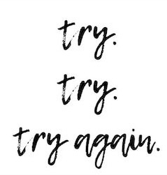
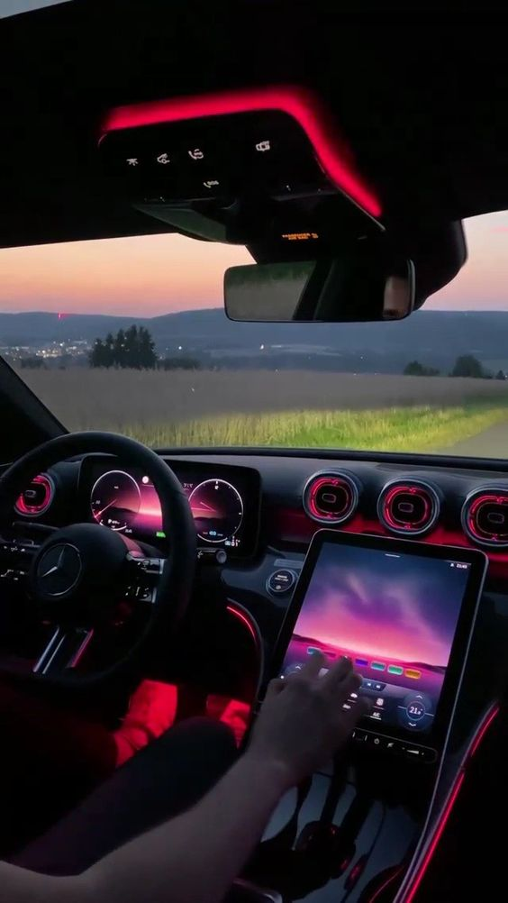
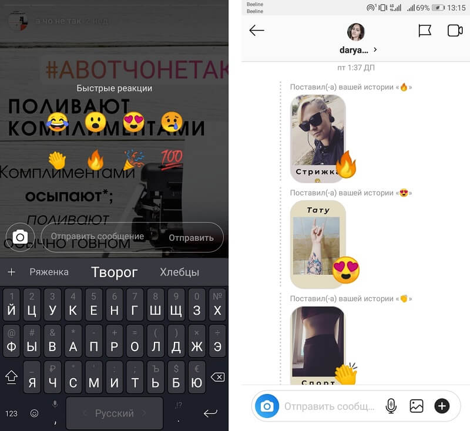

Люди витворяють всяке, а особливо – об’єкти колишньої закоханості. Коли на них снігом сиплять спогади, ви можете стати жертвою їх надмірної уваги чи навіть намірів «усе повернути». Але ми-то з вами не дурачки, а й щоб запобігти біді та втраті важливої життєвої енергії, склали список очевидних (та не дуже) ознак активізації колишніх. І робимо припущення (базуючись виключно на особистому досвіді), чого вони хочуть насправді.
Привіт, а поверни мені книгу
Перше, на що варто звернути увагу, коли проходить декодинг спонтанної активності людини, – це речі. По суті, каталізатори можливості поспілкуватись.
Ось, наприклад, ви взяли у неї/нього книгу з квантової фізики (яку, може, навіть не почали читати), а після розриву забули про її існування. Книги взагалі мають властивість змінювати власника (якщо люди віддають на «почитати», у більшості випадків вона їм вже не потрібна – адже вже прочитана), тобто в такому разі підступний план колишньої другої половинки – перетнутися задля якоїсь розмови. Проте не забувайте, що завжди є доставка поштою або кур’єром.
Підступне інстасторіз або інстасторіз зі спогадами та датою (з періоду ваших стосунків)
Ви, як дорослі люди, не відписалися один від одного в інстаграмі. Але в один момент починає нестися якась дивна штука: він/вона постить не зовсім зрозумілі сторіз, які асоціативно пов’язані з вами – фото вашого улюбленого місця або закладу, або ж фото річної давності (без вашої присутності), але періоду вашого бурхливого кохання. Коли це перетворюється в параною і ви думаєте, що зійшли з розуму, – перевірте, хто першим/ою дивиться ваші сторіз. Отож. Якщо не довіряєте такому аналізу, то мовчазні реакції без тексту можна декодити тільки як «привіт, я все ще існую».
Ой, я тут випадково у твій район потрапив/ла. Може, на каву підемо?
Буває, ми перетинаємося в місті-мільйоннику з якимось знайомим (наприклад, однокласником), хоча ймовірність цього вкрай мала. І щиро дивуємося цьому. Потрапити в район «колишніх» випадково – можна, але навряд чи за поганої погоди чи у робочий час ви будете наївно сподіваються на те, що в цей момент людина вільна і зможе з вами провести час.Як мінімум йому/їй потрібно зібратися. Тому такі «випадковості», як говорив майстер Уґвей з «Панди Кунг-фу», не випадкові.
Тому такі «випадковості», як говорив майстер Уґвей з «Панди Кунг-фу», не випадкові.
Лайки нізвідки
Це навіть схоже на якусь RPG-стратегію, де ціль – звернути на себе увагу. Спочатку помірні й рідкісні лайки, потім реакції-сердечка, потім гіфки в коментах.
Це провокація, яку в народі називають «лайки-натякайки» (і цим займаються також люди, які самі не можуть написати, але чекають, поки ви поведетесь на гру). Ігнорувати це можна, але набагато швидше буде завалити людину ще більшою кількістю соціального фідбеку, й, можливо, цього буде достатньо – або щоб забути про дурні ідеї, або щоб нарешті написати.
Раптово з’являється у твоїх улюблених закладах
А це вже удар нижче пояса, особливо якщо ви вже давним-давно нікуди не висовувались – самі / з друзями / на побачення, наприклад. Ви напевно вже не ходите в «спільні заклади», де удвох проводили багато часу, тому бачити її/його у своїй новій публічній норі як мінімум дивно. А якщо це повторюється, значить, за вами Сталкер і він/вона ну дуже-дуже хоче перетнутися.
Суперлайк у Тіндері
Він/вона тепер знає, що ви переживаєте самотність. Інакше навіщо вам акаунт в дейтинг-додатку? (Є персонажі, які роблять це заради розваги, але все ж.) Вам не хочеться свайпати вправо й відновлювати діалог – тим більше тут. Але якщо бачите суперлайк, весь Всесвіт тисне на вас – «цікаво, що він/вона хоче» або «напевно, лайкнув/ла, щоб звернути увагу на свій самотній статус».
Дзвонить «проконсультуватися»
Як зробити «сім’ю» на Apple Music? Як об’єднати таблиці в Excel? А у тебе випадково немає списку для мейл-розсилки? А як витягти файли зі старого комп’ютера? А який колір штор був, коли ми ночували в хаті в Карпатах? Поки ти щось пояснюєш співрозмовнику/ці, він/вона вкраплює запитання на кшталт «Як справи?», «Що робиш?» І т.д. Через те, що це робочий час і вас відволікають – вами набагато простіше маніпулювати. Так що не дивуйтеся, якщо у вашому календарі уже є помітка «зустріч з колишнім/ою».
Просить накидати нової музики, фільмів і т.д.
В один момент ваші життя вже настільки далеко одне від одного, що колишній/ня, виношуючи ідею «все повернути», хоче знову до вас наблизитися. І просить накидати йому/їй чогось нового зі світу культури, все ваше найпотаємніше та цінне. Найцікавіше, що під час стосунків такі «рекомендації» не працюють взагалі, але коли приходить час, інша людина сідає на голку вашого естетичного смаку. Словом, після того як ви поділилися частиною себе, обов’язково йдуть обговорення – а це розмова, яка може піти у непотрібні вам поля. Обережно з цим.
Давай зустрінемося (вже не вперше)
Коли ви відзначаєтеся в Фейсбуці, що підете на концерт Степана Гіги, з часом у повідомлення прилітає «Ну що, пішли разом?» Не всі люди відзначаються на івентах для того, щоб відвідати захід, але для колишньої/ого це привід зачепитися вашу любов до лайв ентертейнменту. Навіть якщо в особисті нічого не приходило, є ймовірність, що він вона з’явиться на тому ж заході і буде намагатися «випадково» з вами перетнутися.
Ти не міг/могла просто так все забути!
І нарешті, крик відчаю. Пряміше нікуди, red alert, й ви, як добра людина, зобов’язані або довжелезним повідомленням все пояснити, або (куди простіше) реально зустрітися і наваляти моральних тирад колишньому/їй – якщо все настільки погано, чому люди хочуть повернутися назад, а не спробувати рухатись вперед? Ми ненавидимо це, але якщо колись ви прийняли рішення порвати з людиною – на це були причини. І дуже мала ймовірність того, що спонтанні «почуття» на ґрунті ностальгії не закінчаться за декілька днів. Ми не закликаємо ненавидіти один одного, але розуміти – так. Це все, що потрібно. Якщо у вас обох є такий скіл, ви можете навіть дружити після розриву – це характеризує вас як дорослих людей, які цінують себе й іншу людину навіть після всього поганого, що відбулося або могло статися.
Тому порада для всіх, хто в такій ситуації: дівчата та хлопці не видіться на такі провокації, якщо ви остаточно прийняли таке рішення, то будьте з цим рішенням до кінця, не думайте, що ваш партнер(ша) змінився(лася). Це може бути просто манипуляція, люди рідко коло змінюються, ви не повинні терпіти.